-
Defining a single medium imagined by humanity proves to be as complex as it
is: a living, systemic and unstable medium, capable of assuming several states: simultaneity, transience, and scalability.
This living repository of human consciousness reveals technical and cultural implications, over space and time. - .KEYWORDS
-
I Simultaneity
- Reconfiguration
Transcription (1974), Irma Blank.

As Buroughts mentions a language deconstruction trough the cut-up method practices, lanquage in real of computation realm reveals a potencial medium of reconfiguration. In this sense, we can find a state of simultaneity in the reconstruction of meaning, latent on Blank's Transcription.
- Descontruction
The Library of Nonhuman Books (2019), Karen ann Donnachie, Andy Simionato.

The Library of Nonhuman Books (2019) proposes a device capable of scanning already existent books and, with the aid of the great algorithmic power, produces new books, based on a scanned book. Although this machine isn't non-human as it tells, this desconstruction tool may also be percieved as a technical and semiotic reconstruction medium.
- Expansivity
Memex (1945), Vannevar Bush.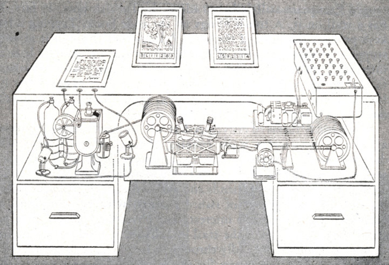
Memex (1945) reveals to reify both a collective and a personal retrieval of data in a single and complex machine. Its technical principles are based on an idea of expansiveness, in order to guarantee continuity of storage and access to information.
- Manipulation
Everything is a Remix (2015), Kirby Ferguson.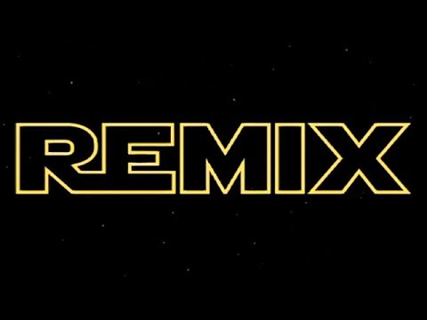
The sense of manipulation mentioned by Bush's techical sight is also expressed in the documentary Everything is a Remix (2015). As Kirby Ferguson argues, even creativity is biologicaly programmed. There isn't musch we can create since humanity has already invented press. All we can do is to manipulate information under a semiotic and a techical medium, just as the Cut-up method defined by Burroughts.
- Control
The policeman’s beard is half constructed (1983), Racter.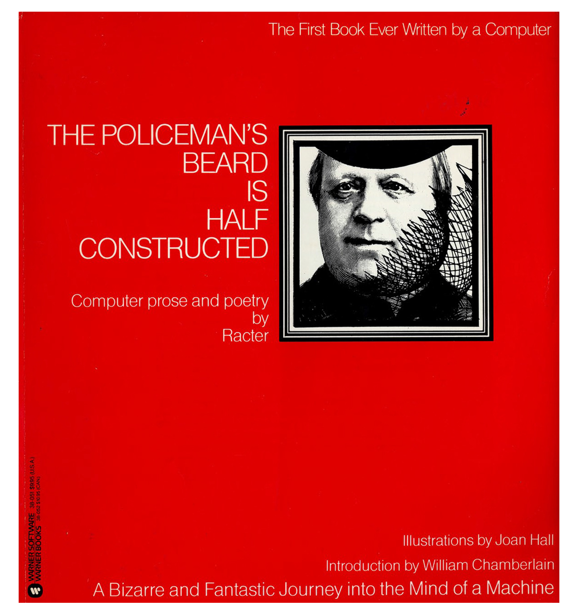
Control is a potential sense of power projected in a medium. Since humanity has no possible ways to control our condition, artists and scientists united efforts on developing a tool capable of producing a narrative autonumously.
- Reconfiguration
-
II Transience
- Reformism
Klavier Integral (1963), Nam June Paik.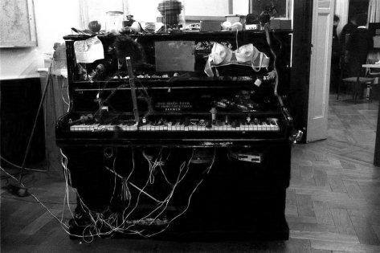
The Klavier Integral (1963) which results from a performance by Paik and Cage occured in an interestid time. Those artists were interested in the reform of the convencional use of a piano as a consolidaded medium.
- Interaction
Videoplace (1975), Myron Krueger.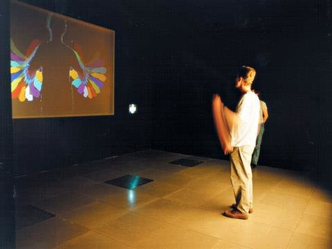
Myron Krueger's works bought a new layer to the new medium: the interactivity and all its potential.
- Transition
The Clock (2010), Christian Marclay.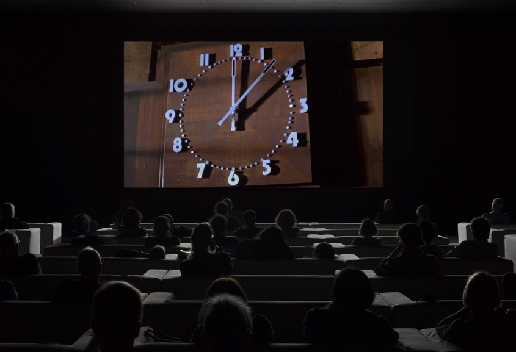
The Clock (2010) materializes the impact of time and technology in its contextual paradigm through its meta discoursivity. This movie integrates multiple film fragments that allude to each minute of the movie's narrative. The movie is self described as as manipulation of time, expressing transience.
- Dissemination
Untitled (1993), Nam June Paik.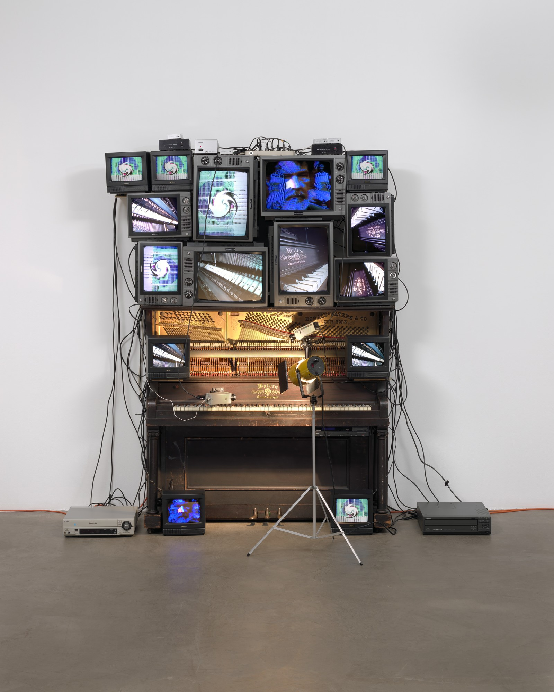
Untitled (1993) evokes the mediation role as well as the potencial oppeness and target of a message throught a universal medium. The global impact and responsability of this medium use is expressed in Paik's manifest of Cibernated Art (1964).
- Reciprocity
24 Hour psycho (1993), Douglas Gordon.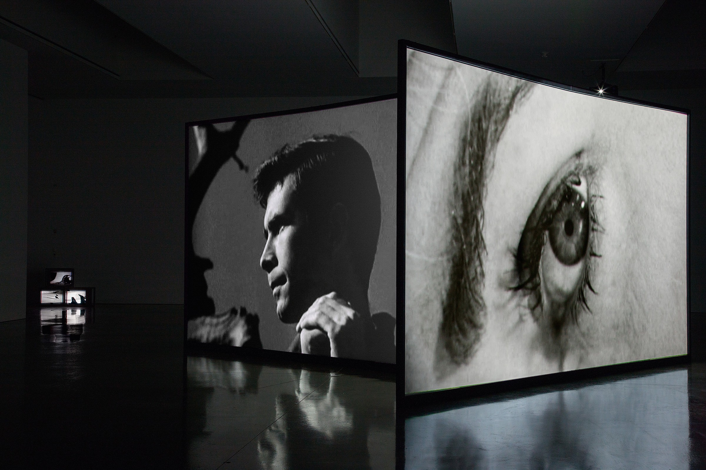
24 Hour psycho (1993) is a broadcast of Hitchcock's Psycho (1960) that lasts for 24 hours. This filmic manipulation of time materializes the reciprocity of the receptor of a message that may also be percieved as the producer of the message (and vice versa). This movie requires not only the atention of the public, but results also from its interpretation for the construction on new meanings.
- Reformism
-
III Scalability
- Representation
Victorian webpage (1988), George Landow.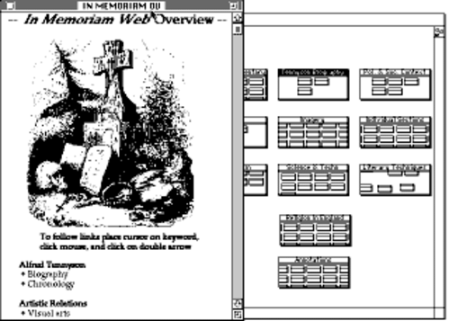
Storyspace (1988) reveals that the representation of space and time through a two dimension surface has been one of the main anchieved aspects since the early stages of the World Wide Web development.
- Syntax
World Wide Web (1989), Tim Berners-Lee.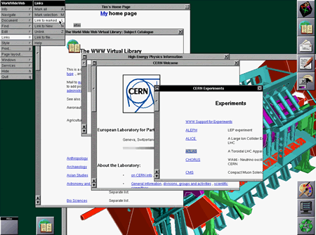
The World Wide Web project has only been anchieved because of development of language and syntax. Language is the medium that faciliates command and control trought the machines. The syntax development evokes the transposition of the universal human logic trought technical means.
- Recovery
Aspen city map project (1980), Nicholas Nigroponte.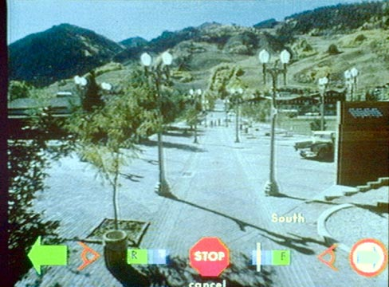
The development of a Aspen city representation model translates a necessity of the real world representation. Aspen city map project (1980) evokes the contextual collective imagination retrieval, projected on a universal medium.
- Scalability
Tree of Knowledge (1780), Chrétien Frédéric, Guillaume Roth.
The Tree of Knowledgement (1780), reveals that the necessity of representing and retrieving information has been searched and anchieved since centuries a go. The necessity of respresenting imformation trought a medium is as old as the humankind and has been expressed in different ways according to the contextual technology.
- Collaboration
Symbolics Document Examiner (1985), Janet Walker.

Since the early web, examining documents has been a developed aspect evoking the physical documents acess and storage. All medium's visual, vocabulary and syntatic approaches aim to establish an association with the material means to preserve and retrieve data. This systemization evokes the one of the main characteristics
- Representation